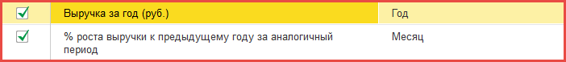
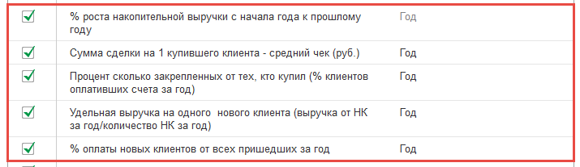
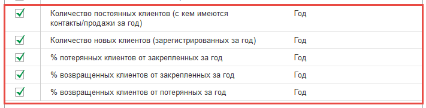

Для управления продажами на предприятии в конфигурации используются показатели. Руководители эти показатели используют для оценки работы менеджеров по продажам. А менеджеры по продажам, изучив данный раздел, могут понять, по каким показателям оценивается их работа.
Для просмотра показателей необходимо в разделе "Клиенты" выбрать команду "Отчеты - Показатели управления продажами".
Все показатели разделены на три группы: история, текущее состояние и будущее состояние.
Показатели группы История:
- Выручка за месяц: показатель отражает уже совершенные продажи в текущем месяце, рекомендуется для менеджера по продажам
- % роста выручки к предыдущему году за аналогичный период: исключает сезонность продаж и позволяет сравнить текущие продажи с таким же периодом в прошлом.

Показатели группы Текущее состояние:
- % роста накопительной выручки с начала года к прошлому году: отражает динамику продаж по состоянию на текущий месяц.
- Сумма сделки на 1 купившего клиента - средний чек: показывает, может ли менеджер совершать крупные продажи, рекомендуется для менеджера по продажам.
- % сколько закрепленных от тех, кто купил: отражает, сколько клиентов из активной базы совершают покупки, позволит оценить сколько нужно получить новых клиентов для увеличения продаж на требуемую сумму.
- Удельная выручка на одного нового клиента: позволяет оценить маркетинговые затраты по привлечению новых клиентов.
- % оплаты новых клиентов от всех пришедших за месяц: позволяет оценить вклад новых клиентов в общий объем продаж. Если вклад существенный, то важным показателем является удельная выручка на одного клиента - она не должна быть меньше, чем маркетинговые затраты иначе привлечение новых клиентов будет способствовать росту убытка для организации, а не росту прибыли.

Показатели группы Будущее состояние:
- Количество постоянных клиентов: показатель вместе с показателем % сколько закрепленных клиентов купил, отражает стабильность бизнеса и зависимость его от новых клиентов.
- Количество новых клиентов: показатель может быть использован для менеджеров по продажам в случае, если маркетинг организации настроен на активное привлечение новых клиентов. Например, при начальном открытии организации для наработки клиентской базы клиентов сначала нужно привлечь.
- % потерянных клиентов от закрепленных за месяц: важный показатель, отражающий динамику отказа клиентов от работы с нашей организацией.
- % возвращенных клиентов от закрепленных за месяц: показатель, отражающий как менеджеры, могут восстанавливать отношения с клиентами. Важный показатель, в случае высокой стоимости привлечения новых клиентов - необходимо прикладывать усилия для возвращения текущей клиентской базы. Актуально в период кризиса в отрасли, когда новых клиентов практически нет.
- % возвращенных клиентов от потерянных в месяц: важный показатель, который рекомендуется для менеджеров по продажам. Показывает увеличение или уменьшение роста клиентской базы у менеджера.

Для создания сбалансированной системы продаж, рекомендуется использовать для менеджеров по продажам минимум по одному из показателей каждой группы. Также одним из показателей может быть отчет «Мой автомотиватор», который отражает объем работы (взаимодействий), который проводят менеджеры в процессе коммуникаций с клиентами.